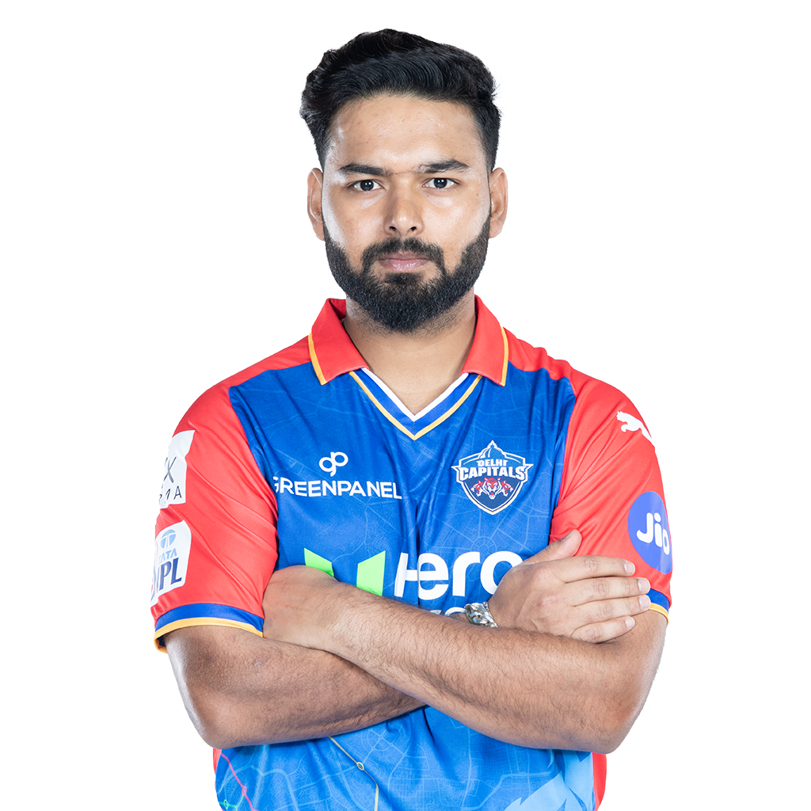

ऋषभ पंत Rishabh Pant
ऋषभ राजेंद्र पंत (ऋषभ राजेन्द्र पन्त) (जन्म 04 अक्तूबर 1997) एक भारतीय
क्रिकेट खिलाड़ी हैं जिनका जन्म रुड़की, उत्तराखंड में हुआ है। इनका पैतृक
निवास 'पिथौरागढ़' जनपद के गंगोलीहाट तहसील के पाली नामक गाँव में है। ऋषभ
पंत घरेलू क्रिकेट दिल्ली के लिए खेलते हैं। पंत मुख्यतः बल्लेबाजी और
विकेटकीपर के लिए जाने जाते हैं। इनके और भी रिकॉर्ड है। इन्हे भारत का
'गिलक्रीस्ट' कहा जाता है ये अपनी बिस्फोटक बल्लेबाजी के लिऐ जाने जाते
हैं, खिलाड़ी खेलता अच्छा है लेकिन शॉट चयन गलत हो जाता है!इशा नेगी इन पर
एकतरफा मोहब्बत है। [1] ऋषभ पंत अपने प्रथम श्रेणी क्रिकेट की शुरुआत 22
अक्तूबर 2016 को 2016–16 की रणजी ट्रॉफी में की थी।[2] और लिस्ट ए क्रिकेट
की शुरुआत 24 दिसंबर (दिसम्बर) 2015 को 2015–16 विजय हजारे ट्रॉफी में की
थी।

अक्षर पटेल Axar Patel
अक्षर पटेल (अंग्रेजी :Axar Patel) (जन्म :20 जनवरी 1994) एक भारतीय
क्रिकेट खिलाड़ी हैं।[1] ये घरेलू क्रिकेट गुजरात क्रिकेट टीम के लिए एक
हरफनमौला के रूप में खेलते हैं। ये गुजरात के पाटीदार (पटेल) है एक बाएं
हाथ के बल्लेबाज और बाएं हाथ स्पिन गेंदबाज हैं।[2] इन्होंने बांग्लादेश के
खिलाफ 15 जून 2014 को अपने वनडे कैरियर की शुरुआत की। 2014 में ये इंडियन
प्रीमियर लीग में किंग्स इलेवन पंजाब की तरफ से खेले थे और 2015 में भी
किंग्स इलेवन पंजाब की तरफ से खेले थे। अक्षर पटेल ऑस्ट्रेलिया और
न्यूजीलैंड में आयोजित 2015 क्रिकेट विश्व कप के लिए भारत की 15 सदस्यीय
टीम में चुने गये थे। इन्होंने अपने ट्वेन्टी-ट्वेन्टी क्रिकेट कैरियर की
शुरुआत १७ जुलाई २०१५ को ज़िम्बाब्वे क्रिकेट टीम के खिलाफ खेलकर थी।

कुलदीप यादव
कुलदीप यादव (अंग्रेज़ी: Kuldeep Yadav) (जन्म; १४ दिसम्बर १९९४) एक भारतीय
क्रिकेट खिलाड़ी है जो घरेलू क्रिकेट उत्तरप्रदेश के लिए खेलते हैं।
इन्होंने अपने टेस्ट क्रिकेट के कैरियर की शुरुआत ऑस्ट्रेलियाई क्रिकेट टीम
के खिलाफ २६ मार्च २०१७ को की थी।[1] कुलदीप यादव इंडियन प्रीमियर लीग में
२०१२ से २०१४ तक मुम्बई इंडियन्स के लिए खेलते थे और २०१४ से अब तक कोलकाता
नाईट राइडर्स के लिए खेल रहे हैं। ये एक मुख्य रूप से गेंदबाज है।